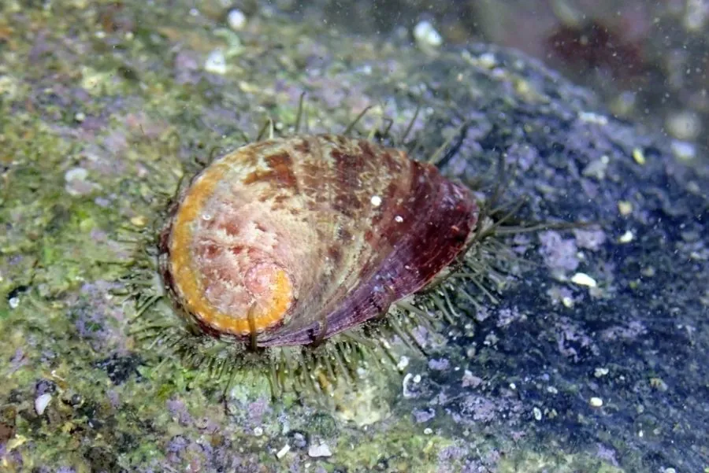

软体动物 · 动物界
杂色鲍 Haliotis diversicolor

壳面布满杂色斑纹的小型鲍，壳上有一排凸起的呼吸孔，足部肥厚，是南方沿海珍贵的养殖与食用贝类。
- 分类
- 门软体动物门纲腹足纲目原始腹足目科鲍科属鲍属
- 栖息环境
- 岩礁海岸的潮间带下区至水深十余米，喜水流畅通的礁石
- 地理分布
- 西太平洋热带和亚热带海域，包括中国东南沿海、日本南部、菲律宾和澳大利亚
- 保护级别
- 尚无保护级别；野生种群受采捕和栖息地退化影响
物种志
杂色鲍的贝壳呈椭圆形，壳长约六至十厘米，壳面粗糙，呈绿褐、红褐与灰白相杂的斑纹，壳上有一列四至九个凸起的呼吸孔，孔口开张，壳内面有明亮的珍珠光泽，呈银白色带绿彩。足部肥厚，吸力很强，能紧紧吸附在岩礁上。它的外套膜边缘生有许多小触手，从壳缘下方伸出，用来感知水流和敌害。壳形扁平，适合在礁石缝隙间活动。
它分布于西太平洋热带和亚热带海域，包括中国东南沿海、日本南部、菲律宾和澳大利亚，栖息在岩礁海岸的潮间带下区至水深十余米，喜欢水流畅通、藻类繁茂的礁石。它昼伏夜出，用齿舌刮食附着在岩石上的硅藻和大型藻类。繁殖期在夏秋，雌雄异体，受精卵在海水中发育，幼虫经浮游阶段后附着到礁石上。它是中国南方重要的养殖鲍类，肉味鲜美，壳可入药，目前尚无保护级别，野生种群受采捕和栖息地退化影响。
形态与习性
- 食性刮食礁石上的硅藻和大型藻类
- 壳长约六至十厘米，壳面杂色斑纹
- 呼吸孔壳上具四至九个凸起的开孔
- 栖息深度潮间带下区至水深十余米
- 繁殖夏秋繁殖，幼虫经浮游期后附着礁石
- 利用南方重要养殖鲍，肉可食，壳可入药
趣味知识
- 杂色鲍壳上的一排小孔是呼吸孔，海水从孔中流过，所以它又叫九孔鲍。
- 它白天吸附在礁缝里，夜里才出来刮食石头上的藻类。
- 鲍壳内面的珍珠层泛着彩虹般的绿光，是制作纽扣和镶嵌工艺品的材料。